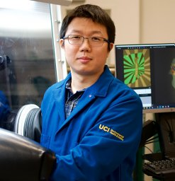
Jinyu Liu
Research Scientist in the field of experimental condensed matter physics, working on quantum materials, including topological phases, excitonic insulators, superconductors, and etc. He conducts low temperature and high precision quantum transport measurements, single-crystal synthesis, low-dimensional device fabrication, and agentic AI-assisted materials discovery.
About
Research profile.
Research interests include agentic AI–driven discovery and design of novel quantum materials; tuning and control of functional physical properties via advanced experimental approaches; synthesis of high quality bulk single crystals; fabrication of low-dimensional devices; characterization of electronic, magnetic, and optical properties; and quantum transport measurements under extreme conditions.
Education
Condensed summary pulled into a cleaner site structure.
Research Experience
Appointments across UC Irvine, LANL, and UCLA.
Research Interests
Click a box to reveal related results, example platforms, and the types of materials or devices involved.
Topological phases and excitonic states
- Topological phase transitions
- 3D quantum Hall states
- Chiral surface states
- Topological insulators
- Dirac/Weyl/Nodal-line semimetals
- Topological excitonic insulators
- Topological superconductivity, etc.
High precision measurements and characterization
- Transport at extremely low temperatures, high magnetic fields, and high strains
- Thermoelectric and heat capacity measurements
- Magnetization measurements and torque magnetometry
- Raman and PL spectroscopy, etc.
Synthesis and device fabrication
- High-quality bulk crystal growth (flux and CVT, etc.)
- Thin-film growth (CVD, PLD, sputtering, etc.)
- Meso/microscale device fabrication (FIB, EBL, etc.)
- 2D heterostructure fabrication, MEMS, etc.
- Advanced device integration for strain engineering, thermal related measurements, etc.
Agentic AI for quantum materials discovery
- Benchmarking and validation of LLMs for quantum materials research.
- AI-assisted search for novel quantum materials with functional properties;
- Data-driven screening and optimization of quantum material properties.
- Developing AI-agents for literature review and data analysis.
Recent works in tuning HfTe5
- Controllable strain-driven topological phase transition in HfTe5.
- Possible spin-triplet excitonic insulator in the ultra-quantum limit of HfTe5.
Representative works in quantum materials
Measurement approaches
- Strong background in low-temperature (down to 10 mK) and high magnetic field (up to 100 T) quantum transport measurements
- Developing and FEA modeling novel measurement techniques including torque magnetometry, thermoelectric measurement and various types of strain apparatuses.
- More than a decade of experience in advanced characterization techniques such as magnetization, heat capacity, XRD, SEM/EDS, and Raman/PL spectroscopy.
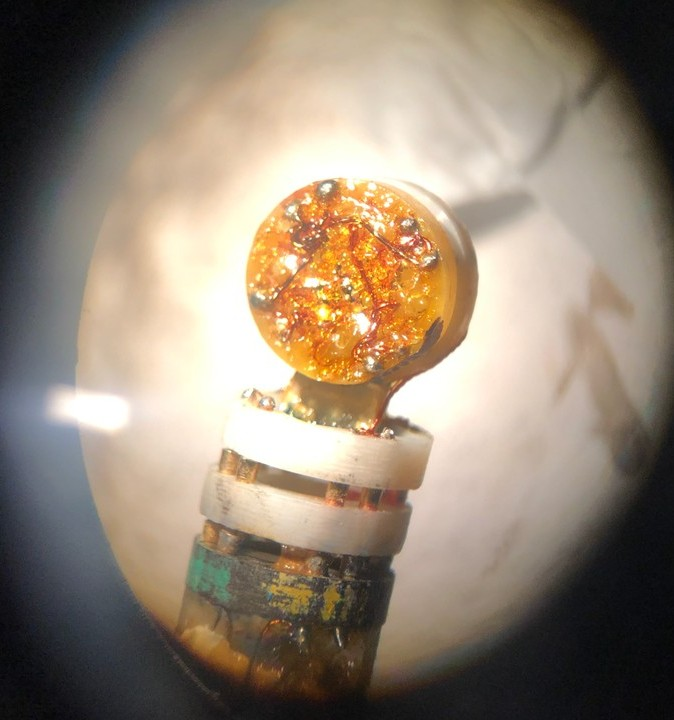
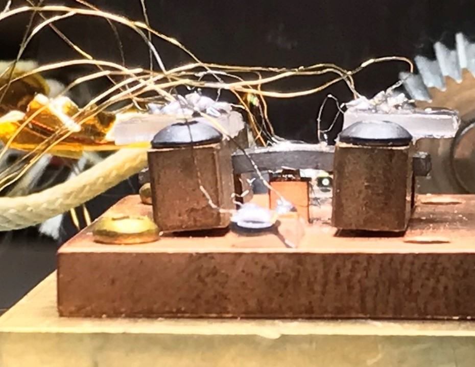
Representative setups and devices
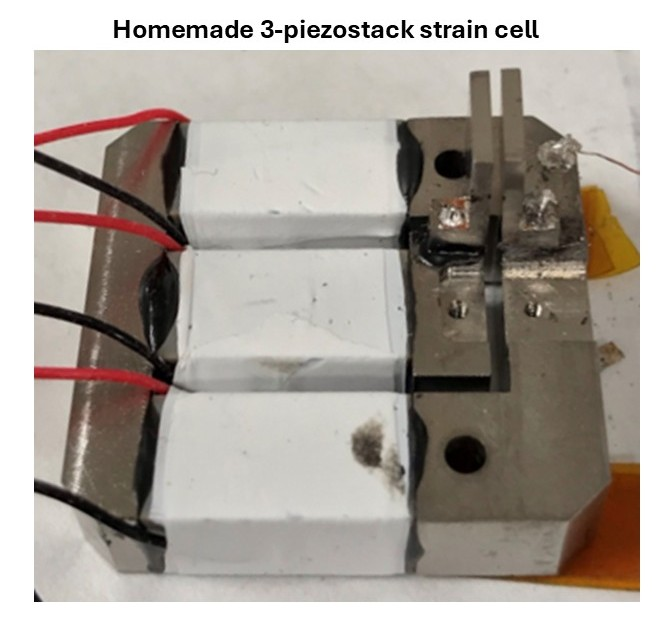
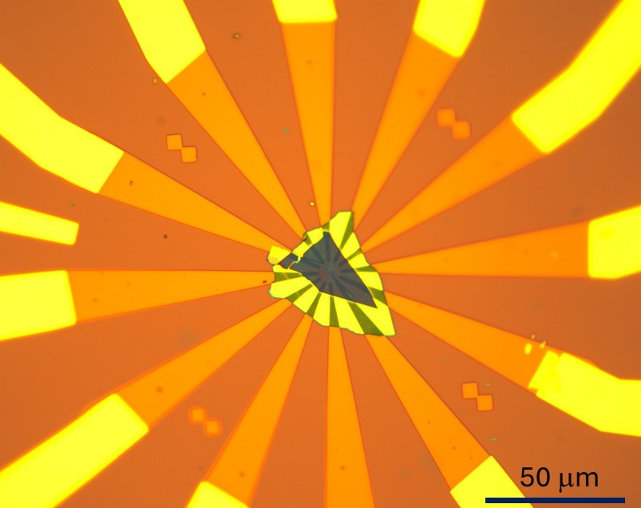
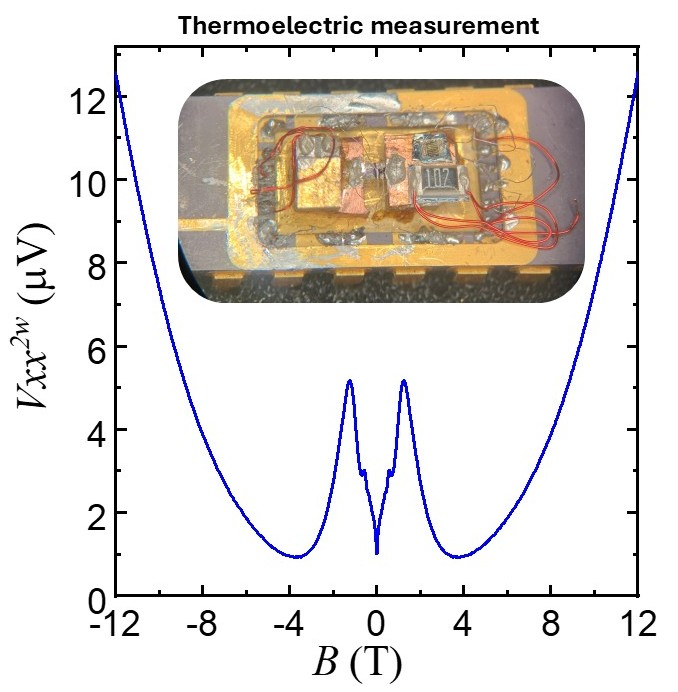
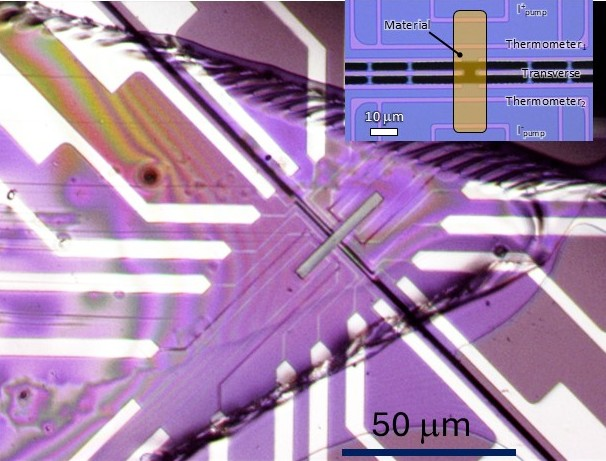
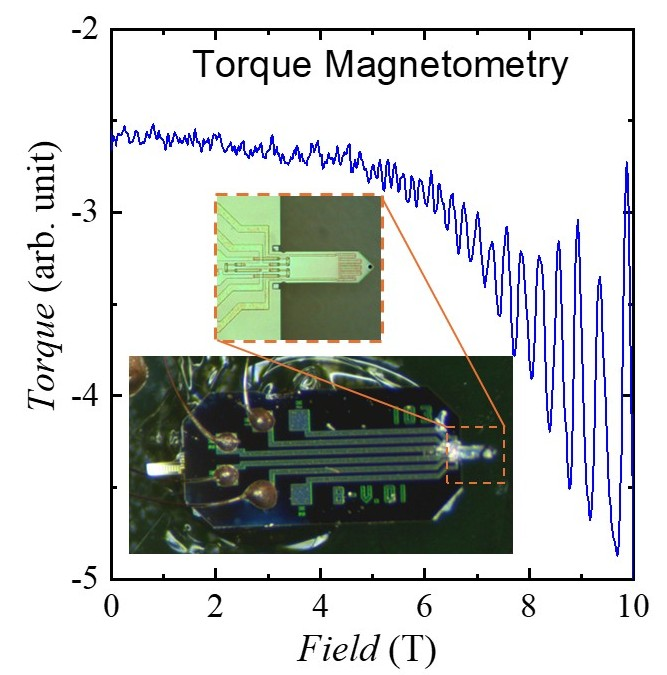
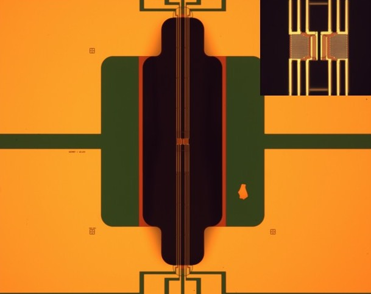
Materials and platforms
- Decade-long experience in growing high quality single crystals and fabricating low dimensional devices.
- Fabrication of low dimensional devices based on novel quantum materials
- Developing advanced techniques for synthesizing bulk crystals and low dimensional materials.
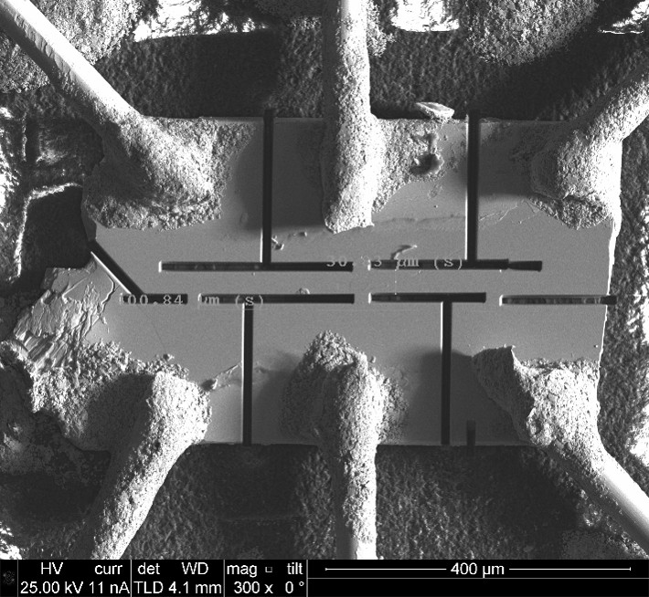
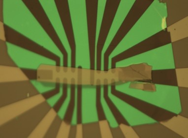
Representative Crystals
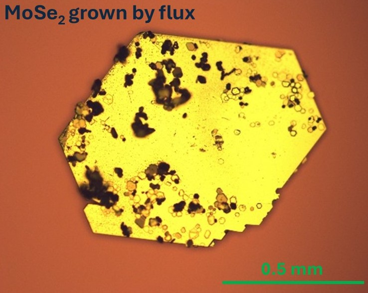
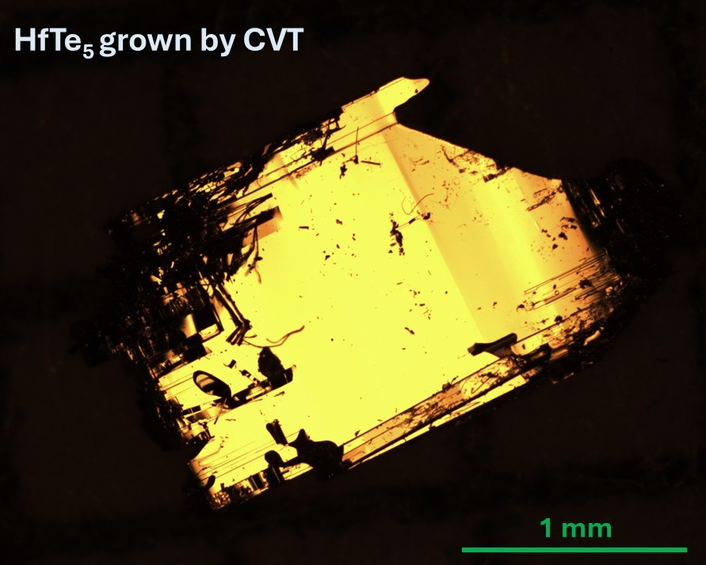
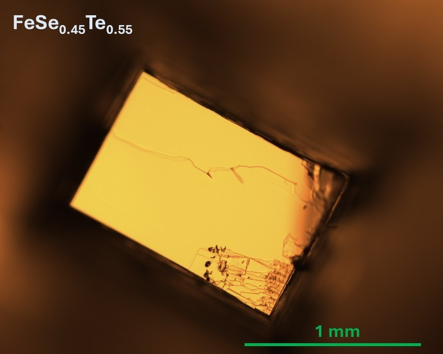
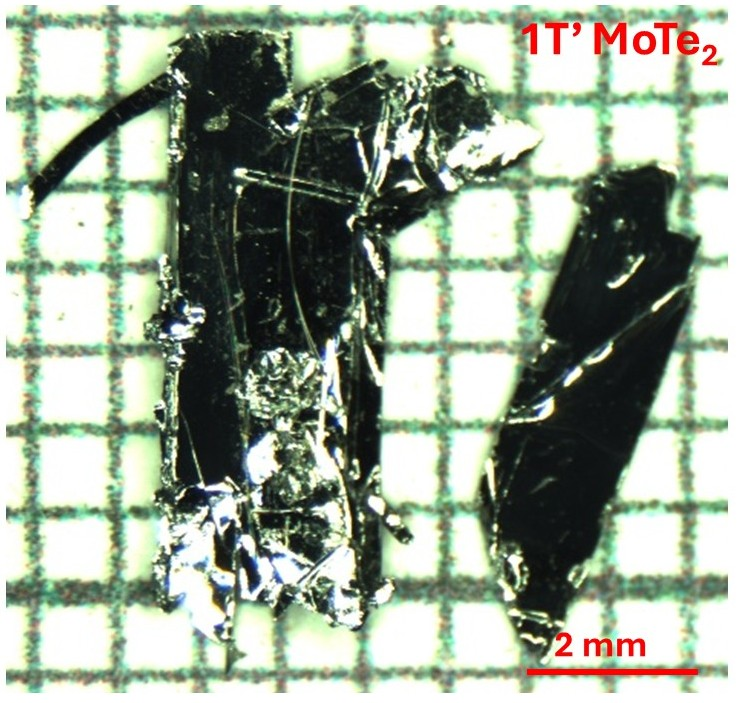
Upon request, see more crystals in JYL_Quan._Mater..
AI-assisted workflow ideas
- Agentic screening for candidate topological and excitonic materials.
- Data-driven prioritization of synthesis or transport measurements.
- Linking structure, topology, magnetism, and quantum geometry descriptors.

Research vision

Selected Papers
View full list on Google Scholar; H-index: 24; I10-index: 36..
Possible spin triplet exciton insulator in the ultra-quantum limit of HfTe5
Controllable strain-driven topological phase transition and dominant surface state transport in high-quality HfTe5 samples
Spin-valley locking and bulk quantum Hall effect in a noncentrosymmetric Dirac semimetal BaMnSb2
Nontrivial topology in the layered Dirac nodal-line semimetal candidate with distorted Sb square nets
A magnetic topological semimetal Sr1-yMn1-zSb2 (y, z < 0.1)
Unusual interlayer quantum transport behavior caused by the zeroth Landau level in YbMnBi2
Toward tunable quantum transport and novel magnetic states in Eu1-xSrxMn1-zSb2 (z < 0.05)
Coupled electronic and magnetic relaxation in Fe1+yTe: direct evidence for the interaction between itinerant carriers and local moments
Thermal transport in quasi-1D van der Waals crystal Ta2Pd3Se8 nanowires: size and length dependence
Nearly massless Dirac fermions hosted by Sb square net in BaMnSb2
Direct fabrication of functional ultrathin single-crystal nanowires from quasi-one-dimensional van der Waals crystals
Teaching, Mentoring and Service
...
Teaching and mentoring
Service and training
New Posts
Latest updates and announcements.